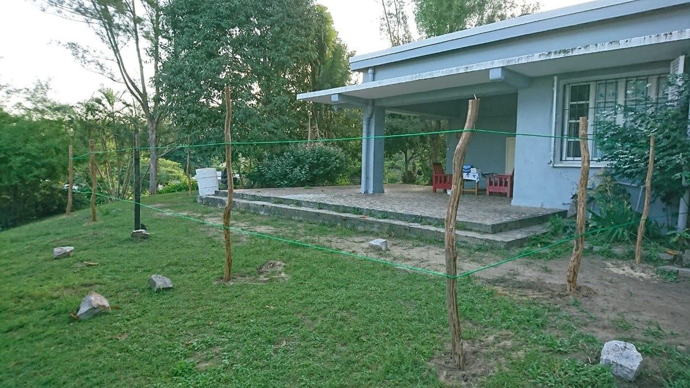
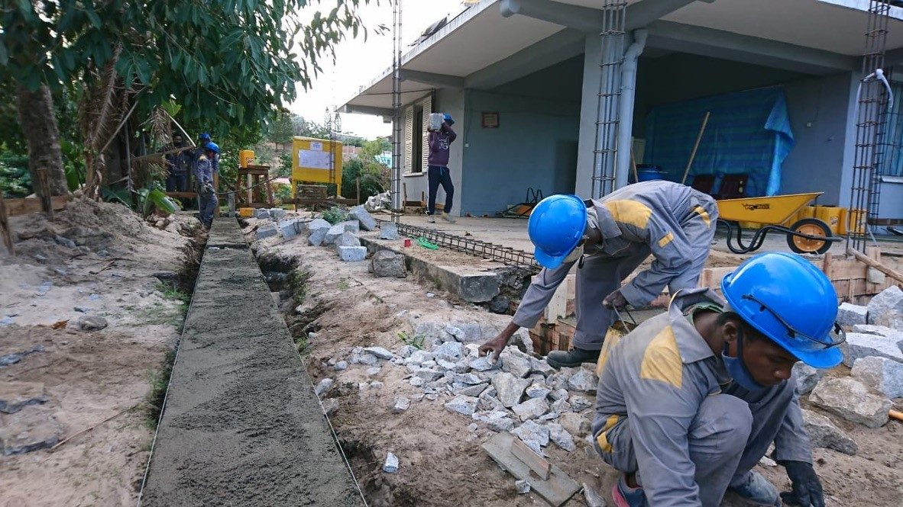
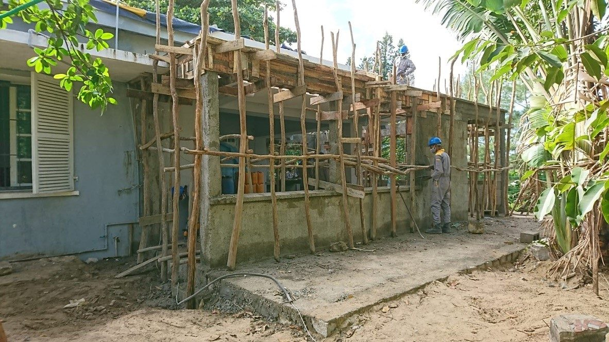
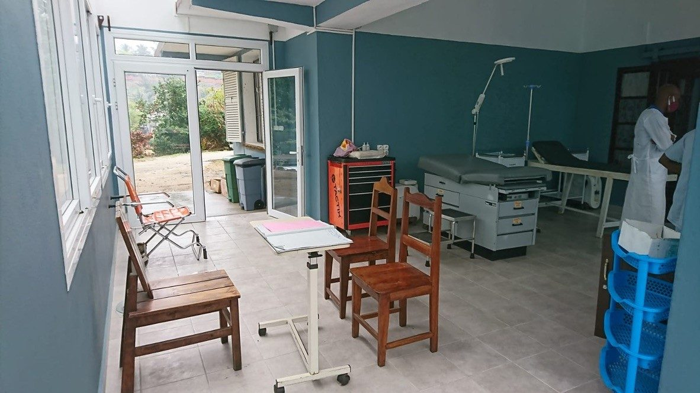
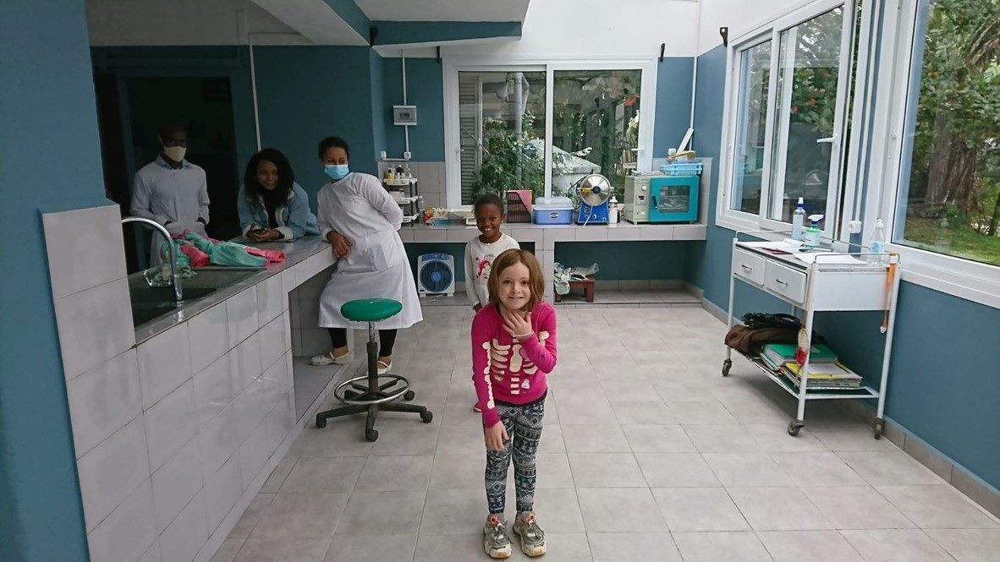
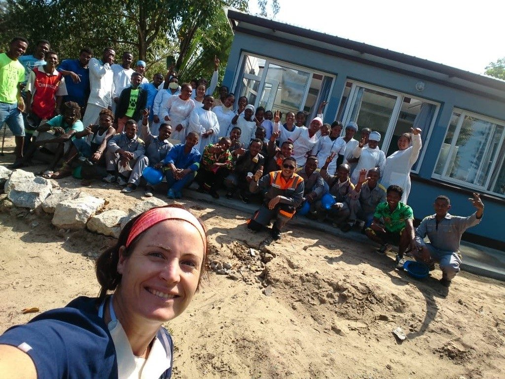
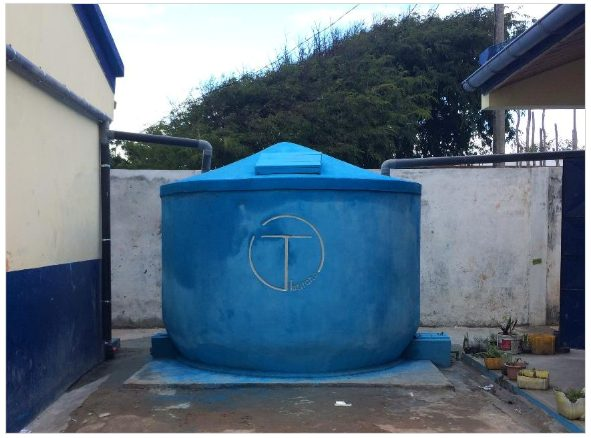
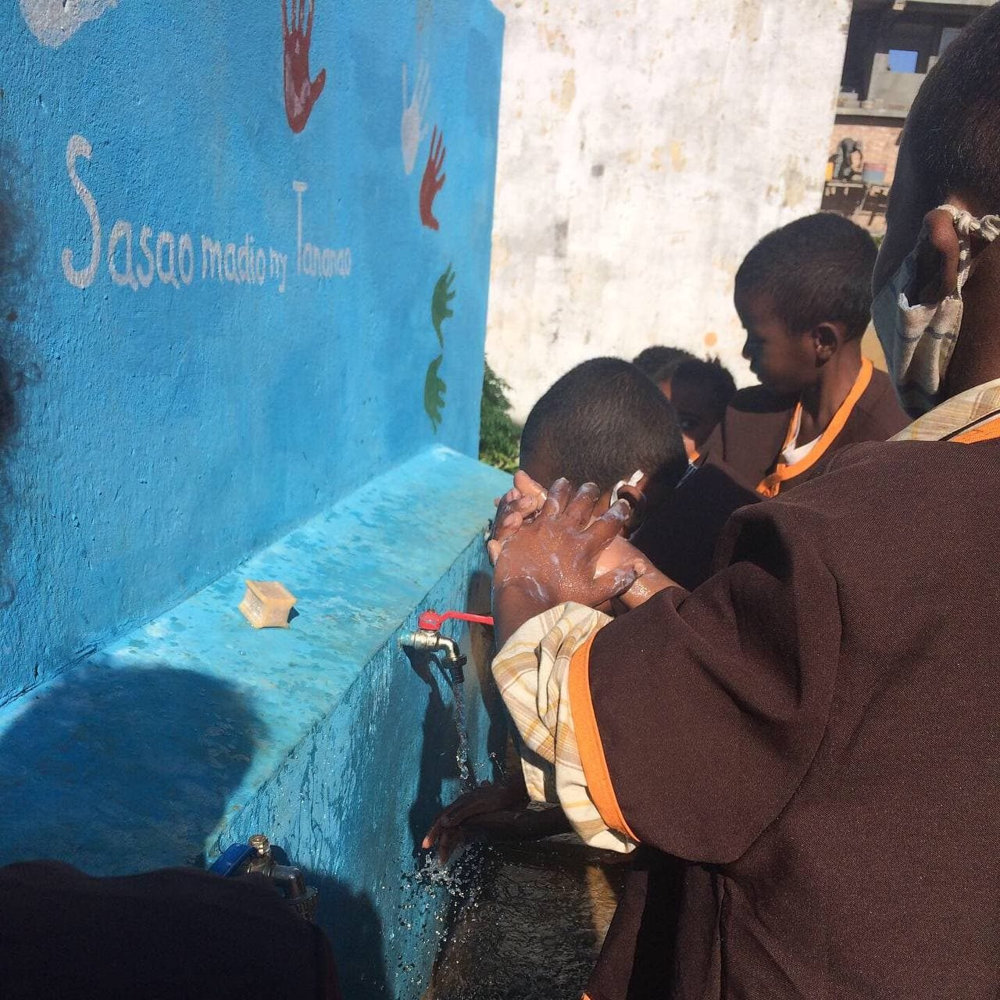
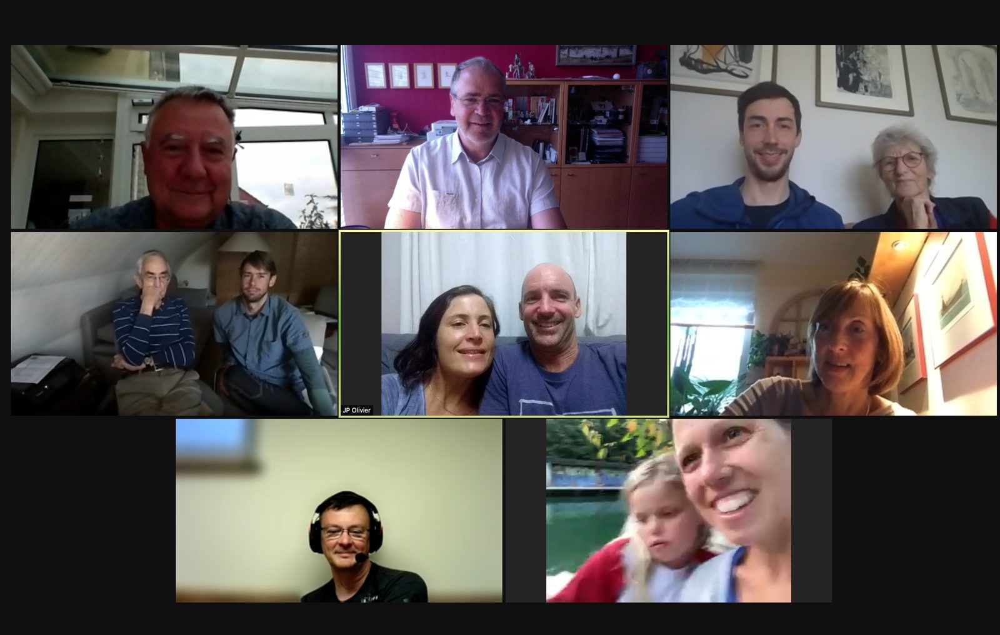
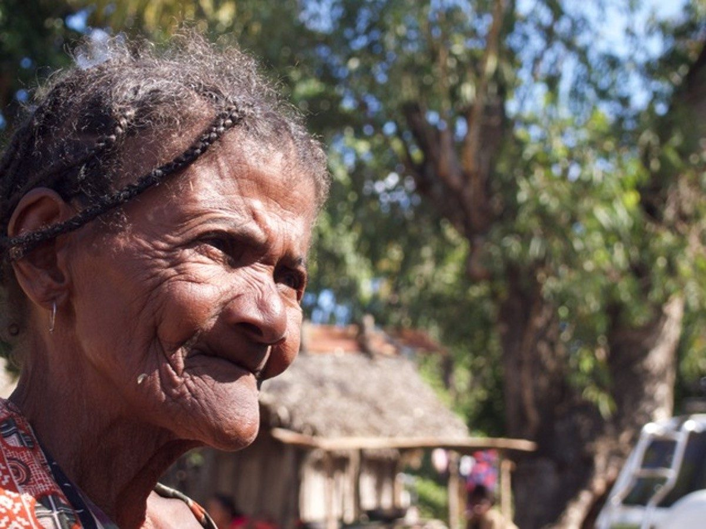

Jahresbericht 2021
Liebe Mitglieder des Vereins, liebe Helfer, Spender und Unterstützer!
Und nun zum 2. Mal hielt die Pandemie des Sars-Covid-19 Virus uns von der geplanten Reise nach Madagaskar ab: Infektionsgefahr und Impfen, Selbstschutz und Hygieneauflagen, fehlende nationale und internationale Flugverbindungen, es war nicht möglich.
2021 beging das Melzer’sche Hilfsprojekt für den Süden von Madagaskar sein 20-jähriges Jubiläum. Erinnert sei hier nochmals an Dr. Klaus-Jürgen Melzer, dessen Erlebnisse im Rahmen einer privaten Reise 2001 in den Süden der Insel zu einer sofortigen und umfangreichen, langjährigen, personellen und auch materiellen Unterstützung der Clinique St. Luc rund um die Familie Dr. Rakotomavo geführt hatten.
Centre Medical de Taolagnaro in Fort Dauphin
Von März bis September 2021 konnte durch die Finanzierung unseres Vereins mit 15.000,- Euro die Veranda des Centre Medical durch Frau Dr. Jane Olivier zu einem neuen Not- und Erstaufnahmeraum umgebaut werden.





„This project has HUGELY benefited our Centre by giving us a First World standard Emergency Room building, which is a professional, clean entry point for our patients, and it is a location where we all love working because there is space, ventilation, big windows, lots of natural light and beautiful green scenery with trees all around… we can even see the sea from our new Emergency Room!
I feel that staff satisfaction has risen significantly because of our new Emergency Room. I know that my satisfaction has exceeded my own expectations.
Added to which this project provided 3 months of work to the KARO construction team. And this employment during a challenging economic time for us all.“
– Dr. Jane Olivier

Im April 2021 haben wir nochmals die Anschaffung weiterer Sauerstoffgeräte der Klinik mit 7000,- Euro unterstützt, da ältere Geräte nicht mehr reparabel waren und eine zuverlässige Grundausstattung aufgrund der Covid-19-Pandemie dringend nötig ist.
Im Oktober 2021 bat die Klinik um Unterstützung für Reparaturen und Ersatz ihrer PC-Ausstattung. Deshalb haben wir auch hier mit 5000,- Euro geholfen.
TATIRANO-Trinkwasserprojekt Befalafa-Grundschule Fort Dauphin

Die Versorgung mit Trinkwasser ist eine wichtige Voraussetzung für ein Mindestmaß an Hygiene und damit für die Krankheits-Prävention. Wir haben uns deshalb mit Harry Chaplin von Tatirano Social Enterprise zusammengetan und für die Grundschule Befalafa in Fort Dauphin von März bis Juni 2021 ein Trinkwasser-Versorgungs-System installieren lassen. Dieses besteht aus insgesamt 2 jeweils 10.000 Liter Tanks aus Stahlbeton zum Sammeln von gefiltertem Regenwasser, einem System von Zuleitungen über Dachflächen sowie mehreren Wasserentnahmestellen, verteilt über das Schulgelände.

Dadurch haben die über 2.100 Schüler langfristig freien Zugang zu Trinkwasser. Überschüsse werden zum Selbstkostenpreis an die Anwohner verkauft und so langfristig Pflege und Wartung der Systeme gewährleistet. Eindrucksvoll ist neben der Verbesserung der Lebensqualität der Kinder die komplette Einbindung der Bevölkerung und Handwerker vor Ort, die Transparenz der Spenden, die Nachhaltigkeit und die digitale Funktionskontrolle, wobei Füllstände und Funktion der Tanks im Netz abrufbar sind. Auf den sehr informativen Link www.tatirano.org sei deshalb hingewiesen.
Sonstiges
Leider nimmt die Hausbank unseres Vereins seit 2021 Kontoführungsgebühren von ca. 14,00 Euro pro Monat. Wer hier Abhilfe weiß oder Kontakte nutzen könnte, bitte melden, das wäre gut.

Am 17.09.21 fand eine unserer Mitgliederversammlungen online statt. So waren wir zwischen Fort Dauphin in Madagaskar, Bern und Wendenberg in der Schweiz, Bad Oeynhausen, Saalfeld, Borna, Gera, Dresden und Rippicha in Deutschland multilingual, sehr lustig und perfekt im Austausch.
Fotoausstellung „Faszination Madagaskar – Land und Leute“

Vom 24.09.21 bis 04.12.21 stellten wir im Kreativzentrum Omnibus des ZMO-Regionalverband Dresden e.V. eigene Fotos unter dem Titel „Faszination Madagaskar – Land und Leute“ aus. Dessen Geschäftsführerin Frau Irina Schilling hatte dies ebenso wie die Vernissage zur Eröffnung gemeinsam mit madagassischen Musikern und reichlich Publikum perfekt vorbereitet. Wir danken den fleißigen Helfern beim Auf- und Abbau in Dresden, Herrn Jan Goldacker der Sparkasse Zeitz für das Überlassen der perfekten Alu-Rahmen und besonders auch Herrn Winfrid Schenk von „Pieschen-Aktuell“, der die Veranstaltung großartig bewarb. Andere Online- oder Printmedien waren dazu kostenfrei nicht bereit.
Spendeneinnahmen und Dank
Im Jahr 2021 konnten wir die Rekordsumme von 26.556,28 Euro an Spendeneinnahmen verbuchen. Das verdanken wir neben den Vereinsmitgliedern und zahlreichen treuen Dauerspendern diesmal auch der Evangelisch-Lutherischen Kirche in Leipzig. Dafür sagen wir allen Helfern des „Melzer-Madagaskar-Projekt e.V.“ herzlichen Dank.
Im Jahr 2021 sind nach 2 aufeinanderfolgenden Jahren extremster Dürre seit 40 Jahren im Süden erneut große Teile der Ernten ausgefallen. Tropenstürme taten ein Übriges. Im Süden Madagaskars wurde die Hungersnot für bis zu 1 Million Menschen größer. Wir wollen und müssen darauf hinweisen!
Bitte helfen Sie auch weiterhin.
Aktuelle Infos, Spendenhinweise und Fotos unter: www.melzer-madagaskar-projekt.de